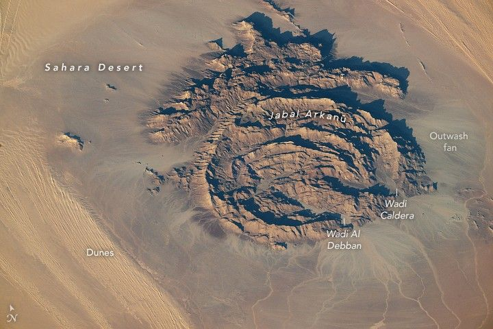

Rings of Rock in the Sahara
In northeastern Africa, within the driest part of the Sahara, dark rocky outcrops rise above pale desert sands. Several of these formations, including Jabal Arkanū, display striking ring-shaped structures.
Jabal Arkanū (also spelled Arkenu) lies in southeastern Libya, near the border with Egypt. Several other massifs are clustered nearby, including Jabal Al Awaynat (or Uweinat), located about 20 kilometers (12 miles) to the southeast. Roughly 90 kilometers to the west are the similarly named Arkenu structures. These circular features were once thought to have formed by meteorite impacts, but later fieldwork suggested they resulted from terrestrial geological processes.
Arkanū’s ring-shaped structures also have an earthly origin. They are thought to have formed as magma rose toward the surface and intruded into the surrounding rock. Repeated intrusion events produced a series of overlapping rings, their centers roughly aligned toward the southwest. The resulting ring complex—composed of igneous basalt and granite—is bordered to the north by a hat-shaped formation made of sandstone, limestone, and quartz layers.
This photograph, taken by an astronaut aboard the International Space Station on September 13, 2025, shows the massif casting long shadows across the desert. The ridges stand nearly 1,400 meters above sea level, or about 800 meters above the surrounding sandy plains. Notice several outwash fans of boulders, gravel, and sand spreading from the mountain’s base toward the bordering longitudinal dunes.
Two wadis, or typically dry riverbeds, wind through the structure. However, water is scarce in this part of the Sahara. Past research using data from NASA and JAXA’s now-completed Tropical Rainfall Measuring Mission (TRMM) indicated that southeastern Libya, along with adjacent regions of Egypt and northern Sudan, receives only about 1 to 5 millimeters of rain per year. Slightly higher accumulations, around 5 to 10 millimeters per year, occur near Jabal Arkanū and neighboring massifs, suggesting a modest orographic effect from the mountains.
Astronaut photograph ISS073-E-698446 was acquired on September 13, 2025, with a Nikon Z9 digital camera using a focal length of 800 millimeters. It is provided by the ISS Crew Earth Observations Facility and the Earth Science and Remote Sensing Unit, Johnson Space Center. The image was taken by a member of the Expedition 73 crew. The image has been cropped and enhanced to improve contrast, and lens artifacts have been removed. The International Space Station Program supports the laboratory as part of the ISS National Lab to help astronauts take pictures of Earth that will be of the greatest value to scientists and the public, and to make those images freely available on the Internet. Additional images taken by astronauts and cosmonauts can be viewed at the NASA/JSC Gateway to Astronaut Photography of Earth. Story by Kathryn Hansen.